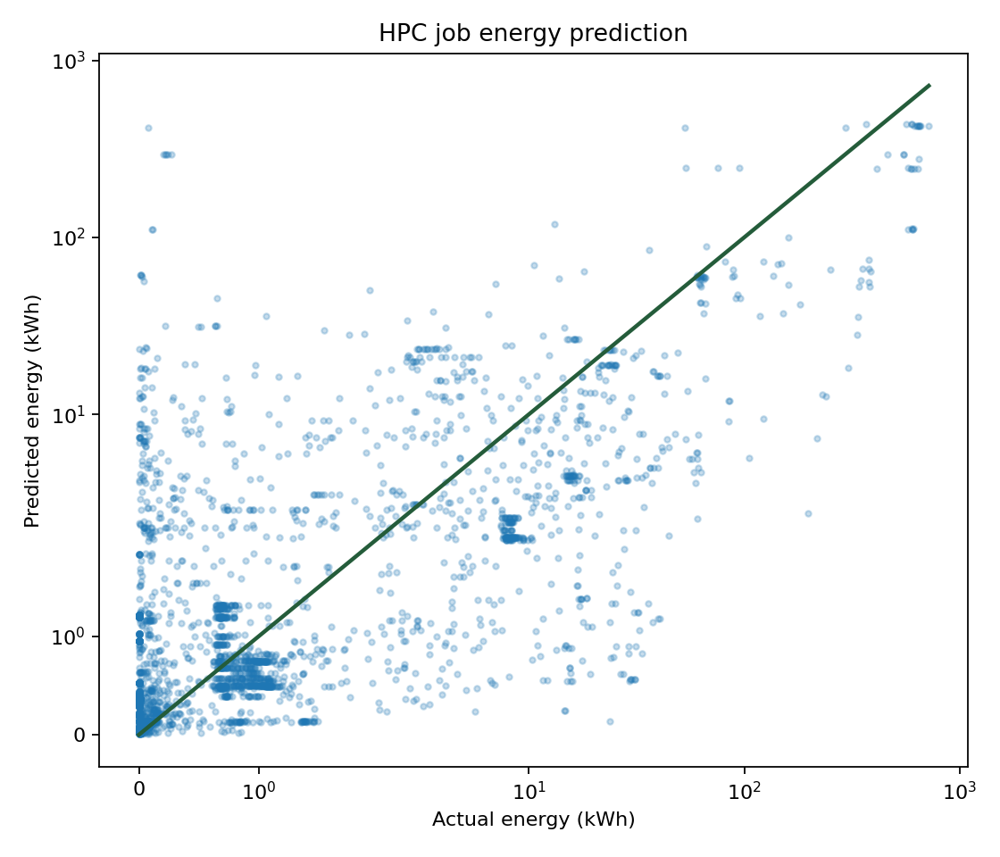
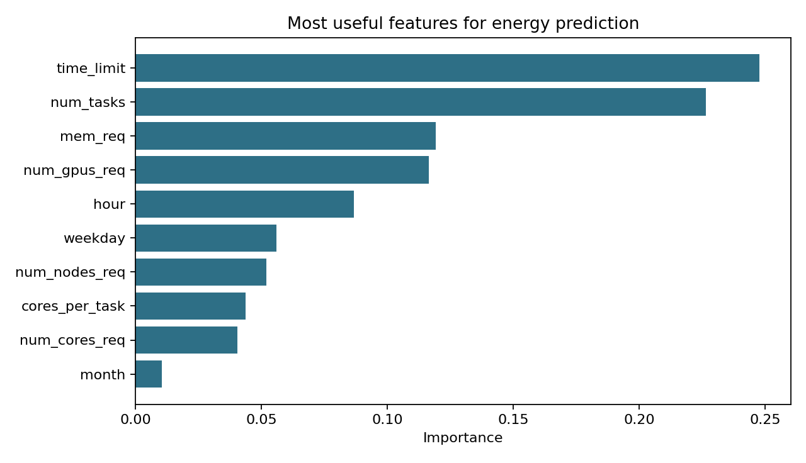
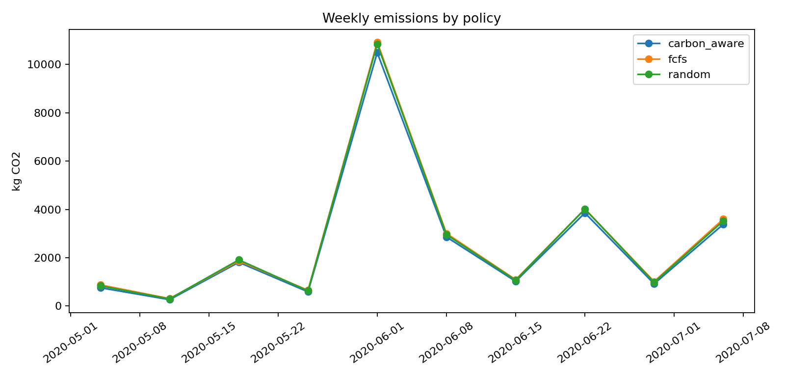
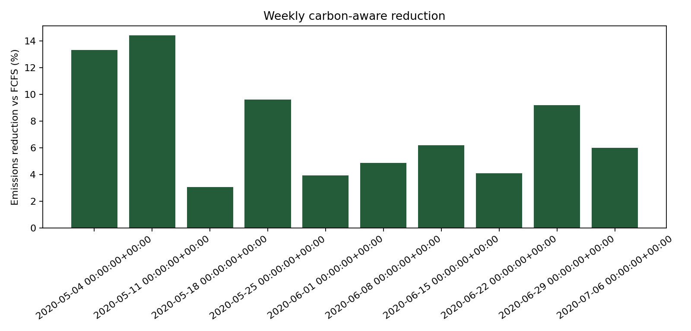
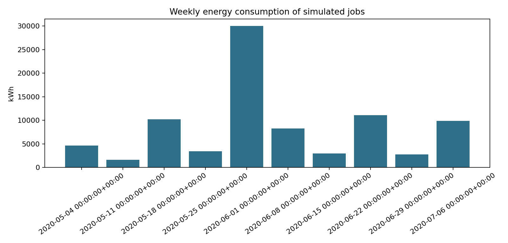
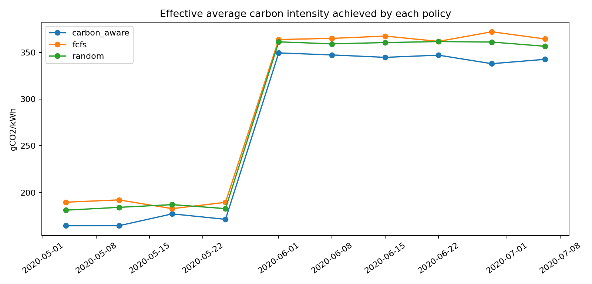
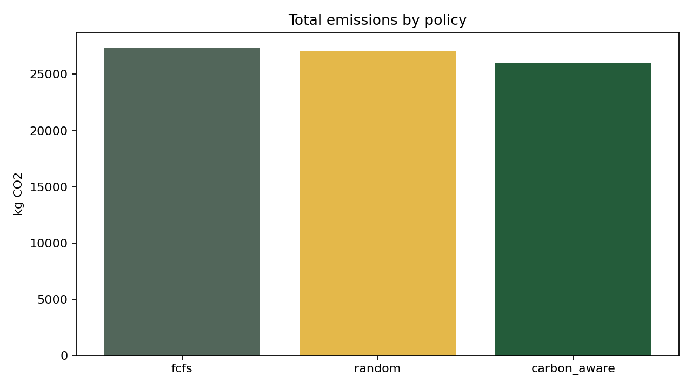
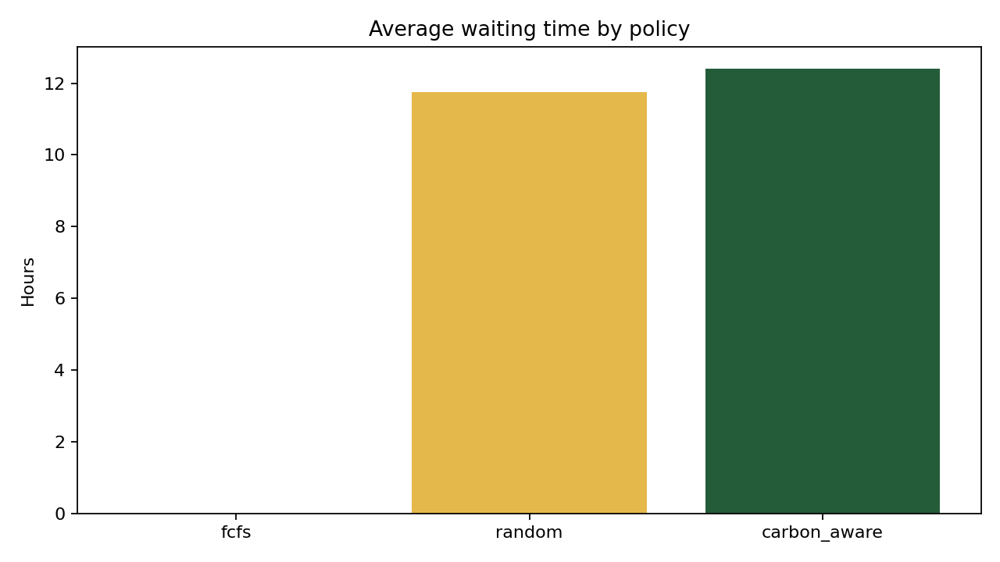
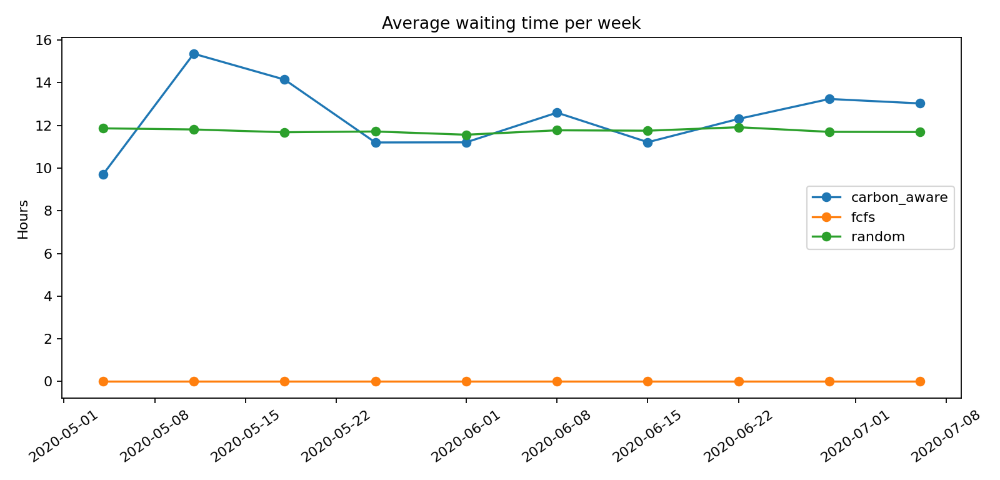
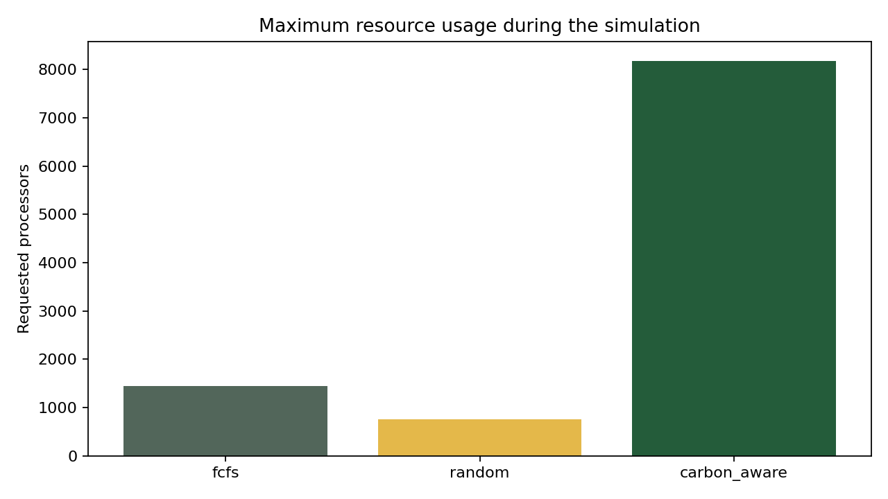

Sintesi
Il progetto valuta se uno scheduler puo ridurre le emissioni spostando i job verso finestre con carbon intensity sintetica piu bassa. La qualita del modello di energia viene misurata su un test set cronologico; la simulazione scheduler usa poi le predizioni generate su tutti i job validi per coprire piu settimane e osservare la variabilita dei risultati.
Struttura del progetto
| Elemento | Ruolo |
|---|---|
scripts/01_run_carbon_prediction.py | Carica il dataset, prepara i job, addestra il modello e salva metriche, predizioni e grafici. |
scripts/02_run_scheduler.py | Legge le predizioni e simula FCFS, random delay e carbon-aware sulle settimane disponibili. |
src/project_rebuild/carbon_model.py | Feature engineering, carbon intensity sintetica, split cronologico e Random Forest Regressor. |
src/project_rebuild/scheduler.py | Preparazione settimane, controllo capacita e ricerca dello start time migliore per policy. |
src/project_rebuild/plotting.py | Grafici per modello predittivo e confronto scheduler multi-settimana. |
Fase 1: predizione energia ed emissioni
La fase predittiva usa job completati con runtime positivo, timestamp validi e campioni di potenza disponibili. L'energia reale viene stimata come:
energy_kWh = avg_power_W * run_time_seconds / (3600 * 1000)
Le emissioni sono calcolate moltiplicando l'energia per una carbon intensity sintetica oraria, espressa in gCO2/kWh. Il modello e una Random Forest addestrata sul logaritmo dell'energia.
| Metrica | Valore | Nota |
|---|---|---|
| Righe valide | 58.846 | Primi 60.000 record ordinati temporalmente, dopo filtri. |
| Train / test | 44.134 / 14.712 | Split cronologico, senza mescolare il futuro nel training. |
| MAE energia | 6,76 kWh | Errore medio assoluto sul test set. |
| R2 energia | 0,49 | Capacita esplicativa discreta per una traccia rumorosa. |
| MAE emissioni | 2,46 kg CO2 | Errore medio sulle emissioni sintetiche stimate. |


Fase 2: scheduler carbon-aware
Lo scheduler confronta tre policy sugli stessi job settimanali:
- FCFS: schedula appena possibile rispettando release time e capacita.
- Random delay: sceglie casualmente una finestra fattibile entro il massimo ritardo.
- Carbon-aware: cerca entro 24 ore la finestra fattibile con carbon intensity media piu bassa.
La simulazione finale usa --split all per coprire 10 settimane reali e mostrare variazioni
settimanali. La valutazione del modello predittivo resta comunque separata e calcolata sul test set
cronologico.
num_nodes_req viene trattata come processori richiesti, come indicato
nelle note del professore.
| Policy | Job | Emissioni | Riduzione vs FCFS | Waiting medio |
|---|---|---|---|---|
| FCFS | 12.000 | 27.365 kg CO2 | 0,00% | 0,00 h |
| Random delay | 12.000 | 27.079 kg CO2 | 1,04% | 11,74 h |
| Carbon-aware | 12.000 | 25.965 kg CO2 | 5,11% | 12,40 h |
Il carbon-aware risparmia circa 1.399 kg CO2 rispetto a FCFS. La riduzione media settimanale non pesata e 7,46%, con minimo 3,07% e massimo 14,41%; il valore aggregato pesato e 5,11% perche alcune settimane hanno consumi energetici molto piu alti di altre.
Variazione settimanale
Questa e la parte piu importante per capire se lo scheduler migliora in media e quando migliora di piu. I job simulati sono 1.200 per settimana, ma il consumo energetico totale varia molto: da circa 1.613 kWh nella settimana piu leggera a circa 30.015 kWh nella settimana piu pesante.




Trade-off




Come riprodurre
Dalla cartella project_rebuild:
python scripts/01_run_carbon_prediction.py --max-rows 60000 python scripts/02_run_scheduler.py --num-weeks 0 --max-jobs 1200 --split all
Se il dataset non si trova in ../project/job_table.parquet, usare
--input path/to/job_table.parquet nel primo comando.
Limiti e sviluppi
- La carbon intensity e sintetica; un'estensione naturale e usare dati reali della rete elettrica.
- La memoria e documentata nella configurazione hardware, ma non e ancora un vincolo hard nello scheduler.
- La simulazione usa un limite di ritardo di 24 ore; si puo studiare una frontiera CO2 vs waiting time variando questo parametro.
- La run scheduler usa
split allper mostrare piu settimane. Per una valutazione solo out-of-sample si puo usare--split test, ottenendo pero meno settimane con--max-rows 60000.